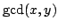

Usage
euclid(x, y)
euclid!(x, y)
Signature
euclid: (%, %) %
| Parameter | Type | Description |
|---|---|---|
| x,y | % | Elements of the ring |
Returns
Returns  computed by the Euclidean algorithm. When using euclid!(x, y), the storage used by x and y is allowed to be destroyed or reused, so x and y are lost after this call.
Remarks
The call euclid!(x, y) may cause x and y to be destroyed, so do not use it unless x and y have been locally allocated, and are guaranteed not to share space with other elements. Some functions are not necessarily copying their arguments and can thus create memory aliases.
See Also
gcd, gcd!